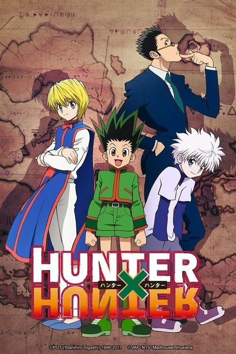
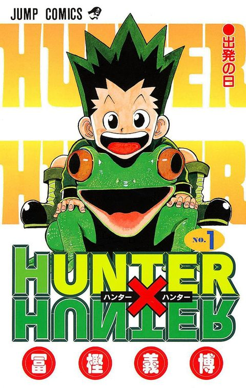

Descubra
o seu Nen
O Caminho do Nen é uma associação de fãs de Hunter x Hunter. Faça o Exame, descubra seu tipo de Nen e ajude a catalogar criaturas no Bestiário.
- 6 tipos de NenDescubra o seu
- Quizzes com tempoDica de Hunter incluída
- BestiárioRegistre criaturas novas
O Caminho do Nen é uma associação de fãs de Hunter x Hunter. Aqui você faz o Exame, descobre seu tipo de Nen, vê suas afinidades num gráfico radar, sela um voto como o de Kurapika e ajuda a Associação a catalogar criaturas novas no Bestiário.
O que é Nen?
Nen é a técnica de controlar a própria aura, a energia vital de todo ser vivo. Quem a domina pode reforçar o corpo, criar objetos e muito mais. O aprendizado começa por quatro princípios:
-
Princípio 1
Ten
Manter a aura em volta do corpo. Protege e conserva a energia.
纏 -
Princípio 2
Zetsu
Fechar os poros e cortar a emissão de aura, para se esconder e descansar.
絶 -
Princípio 3
Ren
Aumentar a produção de aura, ampliando a força e a presença.
練 -
Princípio 4
Hatsu
Expressar a aura de forma única: a habilidade própria de cada Hunter.
発
Os seis tipos de Nen
Cada Hunter tem afinidade natural com um tipo. Passe o cursor (ou toque) em cada ponta do hexágono.
Conheça a obra

Anime
Madhouse · 2011–2014

Mangá
Togashi · desde 1998
Linha do tempo
- 1998
Mangá
Togashi estreia Hunter x Hunter na Weekly Shonen Jump, da Shueisha.
- 1999
Primeiro anime
A Nippon Animation estreia a primeira série para a TV, com 62 episódios.
- 2011
Anime da Madhouse
Nova adaptação que recomeça a história do zero e chega a 148 episódios, até 2014.
- 2013
Filmes
São lançados Phantom Rouge e The Last Mission.
- 2026
Retorno do mangá
Em 29 de junho, o mangá volta de uma longa pausa, com o capítulo 411.
Os protagonistas
As frases em destaque resumem a ideia de cada personagem; não são citações literais.
Como funciona
-
Passo 01
Inscreva-se no Exame
Crie sua conta preenchendo a ficha dentro do cartão da Associação Hunter. Você recebe um número de inscrição.
01 -
Passo 02
Faça o quiz
São 14 perguntas no estilo da Divinação do Copo d’Água. Responda com sinceridade: não existe resposta certa.
02 -
Passo 03
Descubra seu tipo
O resultado mostra seu tipo de Nen, o efeito que ele causaria no copo e a filosofia que o acompanha.
03 -
Passo 04
Veja suas afinidades
No perfil, o hexágono mostra suas afinidades com os tipos de Nen.
04 -
Passo 05
Sele seu voto
Defina meta, restrição e penalidade. Quanto mais severa a restrição, maior o poder do voto.
05 -
Passo 06
Conheça os personagens
Passe o cursor sobre a arte para conhecer Gon, Killua, Kurapika, Leorio e Hisoka.
06
Divinação do Copo de Água
A reação da água e da folha à aura revela o tipo de Nen.
Mural de Hunters
Neste protótipo, o mural mostra os Hunters inscritos neste navegador. Com o banco de dados, ele passa a listar todos.